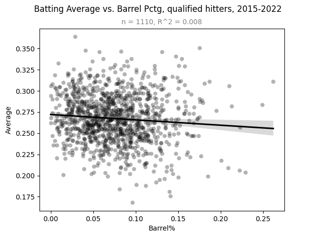
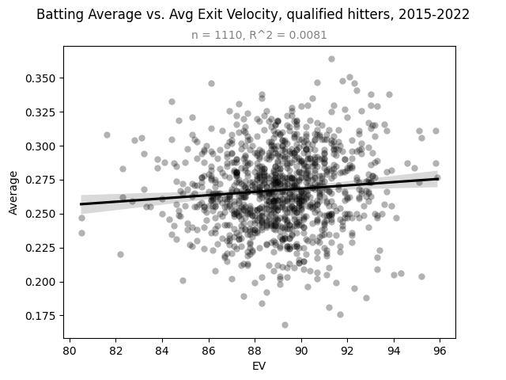
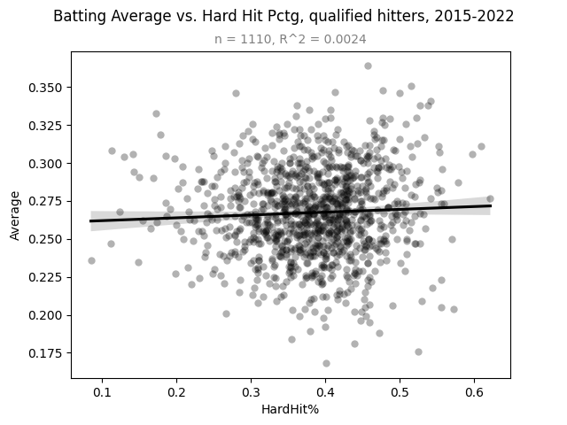
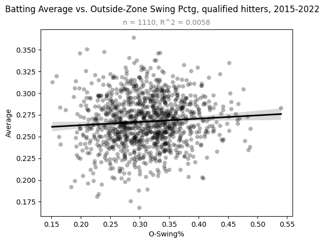
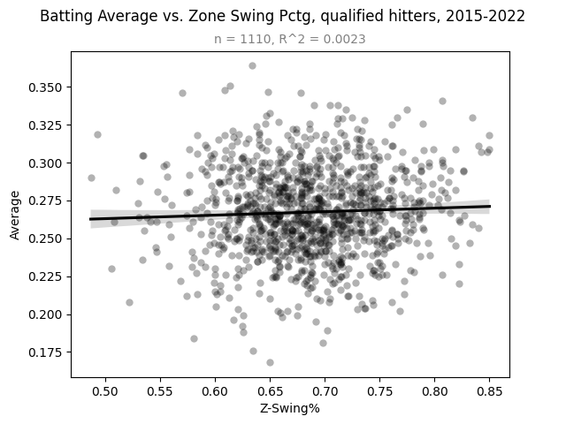
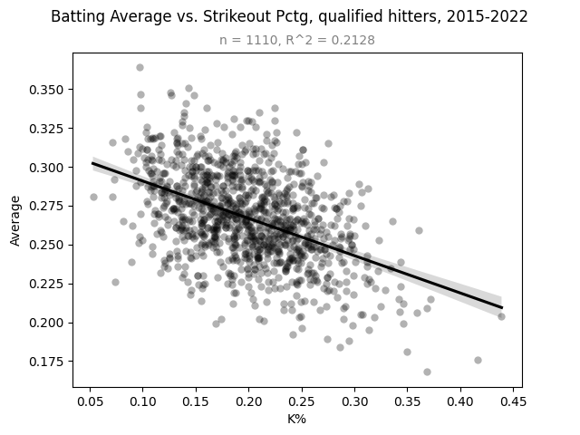
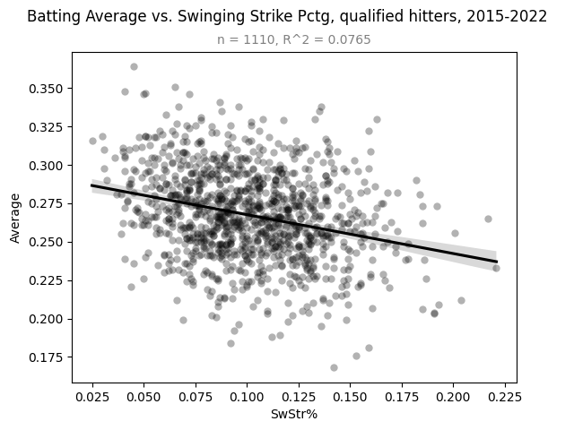
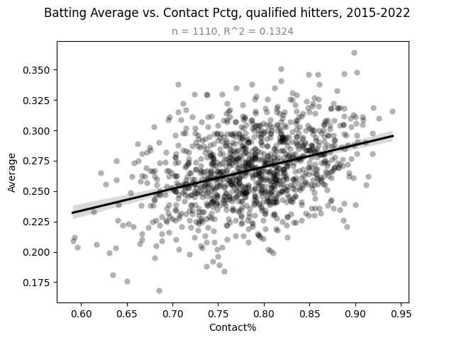

Batting Average as a Contact Metric
by A. Kline
Posted on 06/30/2023
You don’t have to be a sabermetrics nerd to have noticed the sharp decline in prominence of batting average over the past couple decades. Despite being baseball’s most famous statistic (and perhaps the most famous player statistic in all of sports), batting average has fallen out of favor due to its reductiveness and inaccuracy in relation to the broader idea of batter performance. Simply Googling “batting average flaws” yields several articles about this exact subject, such as this one from Fangraphs. And critiquing batting average is by no means limited to the fringes of the baseball community, either–thanks in no small part to Moneyball, the more holistic substitute known as on-base percentage has entered the public lexicon.
Curiously, however, batting average remains one of the most omnipresent stats in the game. It’s one of the first stats you see on any website publishing them for players. And every baseball fan intuitively knows what a .300 hitter looks like in comparison to a .250 one. Indeed, most fans still care a fair bit about it, whether or not they would actually admit it–I think everyone can agree that Luis Arraez’s quest to hit .400 is one of the biggest stories to watch in baseball this year.
In fact, it was Luis Arraez’s performance this season that inspired me to think seriously about batting average again for the first time in several years. I’m not suggesting that it should be used as a holistic measurement for batter performance in the same way that OPS and wOBA are now. It’s not even close to that valuable. But that’s not to say it serves absolutely zero purpose.
Let me pose to the reader a question–prior to Statcast, what was the best way to measure a hitter’s contact ability? Was it strikeout rate? Maybe, but that does not necessarily correlate well with the ability to put the bat on the ball–two fouls and no swing at a pitch in the zone is identical to three swings and misses as far as the scoreboard is concerned. Maybe it was contact percentage instead–but good luck getting any of that data prior to 2002. My hypothesis is that for most of baseball’s history, the best metric readily available to determine how effective at making contact a given hitter is would be their batting average, and that it still serves as a pretty good composite measure for contact ability even in today’s league. Of course, contact is only one part of what makes a good hitter good. The hitting triangle, as I like to call it*, consists of contact, power, and plate discipline, and any elite hitter must be good in all three of these categories.
To test my hypothesis, I decided to look at all qualified hitters in the Statcast era and see how well their batting averages correlated with their more peripheral metrics that can be easily categorized as being a measure of contact, power, or plate discipline. As per usual, you can see my dataset here. Let’s start by looking at how batting average correlates with measures of power.
Our first target is barrel percentage. Since barrels are simply batted balls with an expected batting average over .500 and an expected slugging percentage of over 1.500, they are almost always well-struck balls, and as a result barrel percentage leaderboards are a great way to pick out power hitters.
There is no clear relationship between barrel percentage and batting average for hitters in this sample. (Data: Baseball Savant)
As is clear above, the relationship between barrel percentage and batting average for qualified hitters is tenuous at best. However, barrel percentage is not the only metric for a hitter’s power–average exit velocity may be even better for that purpose. So how does it correlate with batting average?
There is no clear relationship between average exit velocity and batting average either. (Data: Baseball Savant)
Much like barrel percentage, average exit velocity seems to have no bearing on a hitter’s batting average. But as any statistics student will tell you, averages can be skewed, meaning average exit velocity may not be the best thing to use here. So as one last measure of power, let’s look at the percentage of all batted balls with an exit velocity of above 95 miles per hour–a stat called hard-hit rate.
Somehow, the relationship between hard-hit rate and batting average is even less apparent. (Data: Baseball Savant)
With that, I think we can reach a conclusion that you probably already made long before reading this post anyway–a hitter’s batting average has seemingly no correlation with their power. Now, let’s look at another leg of the hitting triangle: plate discipline.
The first measure of plate discipline we’ll look at is O-Swing%–the percentage of pitches outside the strike zone a batter swings at. How does that correlate with batting average?
There appears to be no correlation between O-Swing% and batting average. (Data: Fangraphs)
Of course, plate discipline also encompasses how hitters respond to pitches within the strike zone. Z-Swing% is the complement to O-Swing% that only looks at pitches in the strike zone.
It doesn’t look like there’s any relationship between Z-Swing% and batting average either. (Data: Fangraphs)
As measured by the two stats used above, there appears to be no meaningful relationship between batting average and plate discipline–so that’s two whole legs of the hitting triangle that batting average does not mesh with. The last leg of the hitting triangle is, of course, contact. So how well does batting average correlate with contact metrics? Despite the limitations I mentioned earlier, strikeout percentage serves as a generally good peripheral stat to measure a hitter’s contact ability**, so let’s start with that.
There is a noticeable negative relationship between strikeout percentage and batting average. (Data: Fangraphs)
This is the first graph in this post that actually needs a trendline. The R^2 value of 0.21 indicates that there is an imperfect yet noticeable correlation between batting average and strikeout percentage among qualified hitters in the Statcast era. Another (more reliable) way to measure a hitter’s contact ability is their swinging strike rate–the percentage of total pitches they see that result in a swing and miss. How does that correlate with average?
There is a noticeable negative relationship between swinging strike rate and batting average. (Data: Fangraphs)
This relationship is admittedly weaker than the one above, but a relationship it still is. The final metric we’ll look at is contact percentage–the proportion of all swings a hitter makes in which contact is made. It might be the best peripheral measure of a hitter’s contact ability for, well, obvious reasons. Its relationship with batting average is as follows:
There is a clear positive relationship between contact rate and batting average for qualified hitters. (Data: Fangraphs)
It is not surprising that the percentage of swings in which contact is made is positively correlated with batting average. On a fundamental level, this is exactly what any baseball fan would expect–yet it’s also the single strongest piece of evidence towards my original hypothesis. As shown above, batting average is correlated only to the contact leg of the hitting triangle–at least for qualified hitters in the Statcast era. Of course, we’ve only looked at graphs and trendlines thus far. However, with the sample size and R^2 values known, we can reverse engineer the p-values for each graph–a.k.a. the probability that a given relationship occurs by chance alone.
| Metric | Category | R^2 | p-value |
| Barrel% | Power | 0.0080 | 2.86e-3 |
| AvgEV | Power | 0.0081 | 2.69e-3 |
| HardHit% | Power | 0.0024 | 1.03e-1 |
| O-Swing% | Discipline | 0.0058 | 1.11e-2 |
| Z-Swing% | Discipline | 0.0023 | 1.10e-1 |
| K% | Contact** | 0.2128 | <1e-5 |
| SwStr% | Contact | 0.0765 | <1e-5 |
| Contact% | Contact | 0.1324 | <1e-5 |
Interestingly, most of these p-values are statistically significant down to the 0.01 level. That being said, the statistically significant results do not mean much in the case of barrel percentage, average exit velocity, and O-Swing% when a) the p-values still dwarf those of the three contact stats and b) the linear trends in question all fail the eye test. Also, using p-values can be a problem when the sample size is as high as it is in this sample–the more datapoints you have, the lower the threshold is for statistical significance in a linear relationship.
Even I was surprised to see just how well batting average correlated with measures of contact for hitters. This result should serve as a pretty clear indicator that batting average can be used as a proxy metric for a batter’s contact ability, and in a surprisingly holistic way. Of course, in today’s league we have a number of more advanced metrics readily available that can be used for this exact purpose. Statcast’s xBA, for instance, is a good example of this–in fact, it’s probably better at measuring the contact ability of a hitter than actual batting average because it attempts to correct for the inherent luck in what results in a hit. But as a Statcast metric, xBA has only been available since 2015–meaning it has only been around for about 5 percent of Major League Baseball’s existence***. And as stated earlier, plate discipline metrics like O-Swing%, Z-Swing%, and Contact% have only been around since 2002, which is not much better.
This is a harsh reality we sabermetrics nerds must face. Yes, baseball has easily the most advanced analytics and metrics out of any professional sport in existence, and the stats around today are the best and most accurate baseball stats that have ever been invented. But so many of those metrics have only been available for a couple decades at most. There’s no way to calculate the xBA, swinging strike rate, or contact rate for a player 100 years ago, and there never will be. We will never be able to evaluate that same player’s contact ability in the same ways we would for a player today. But we will have that player’s batting average–and that’s a pretty darn good start.
* And by “I like to call it,” I mean “I just made up right now.” Regardless, I am definitely not the first person to come up with this idea. But regardless, I am pretty proud of this name.
** Strikeout percentage is a less straightforward case than I implied since it also works as a measure of plate discipline. That being said, if I treated it as such, it would be the only discipline metric used to at all correlate with batting average.
*** If you choose 1876 (when the National League was founded) as the founding date for Major League Baseball.